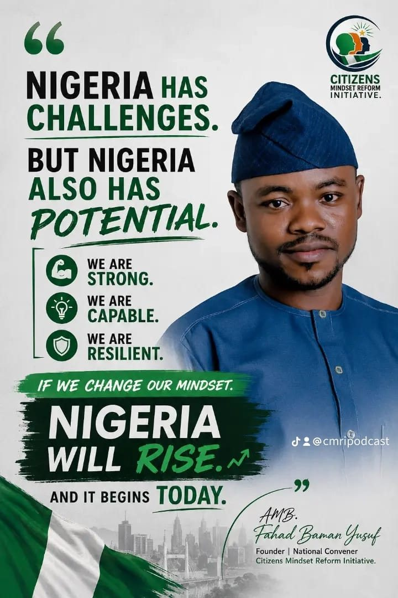
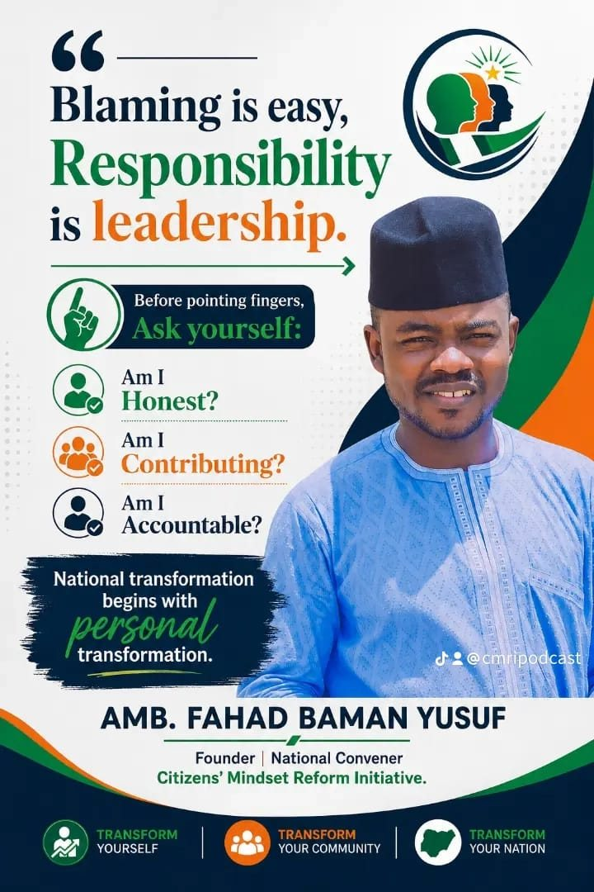
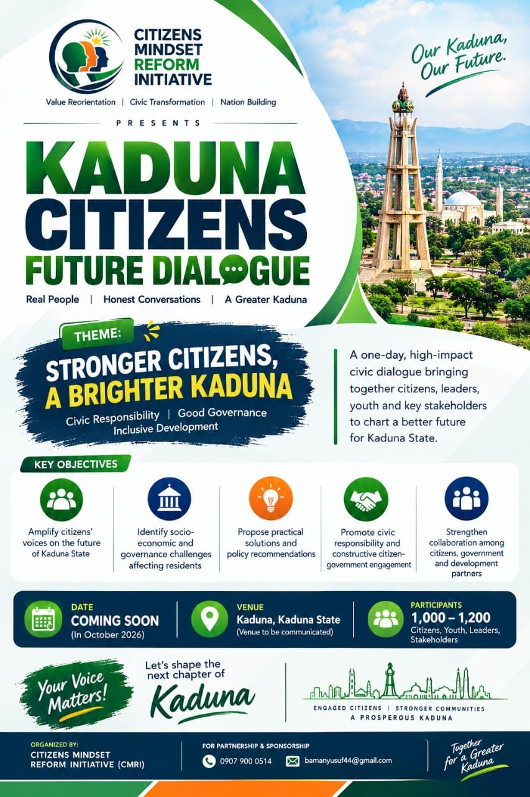
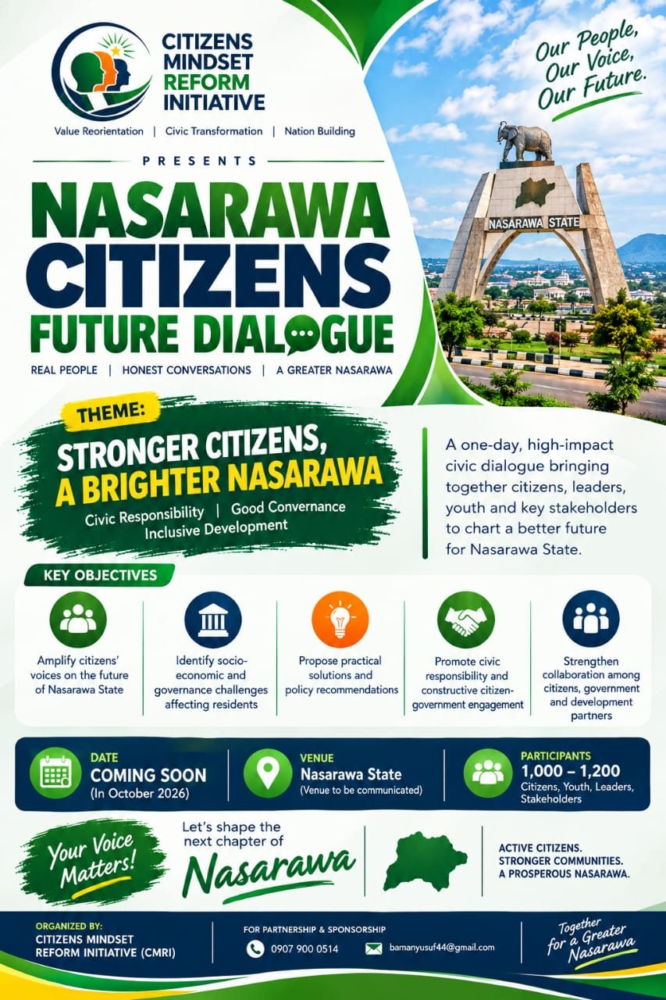
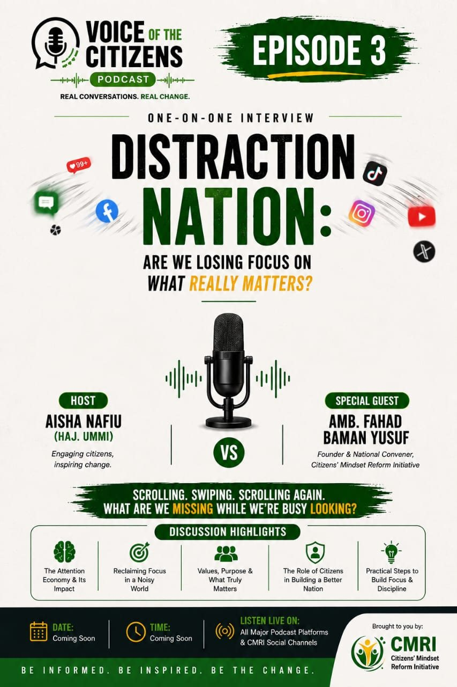
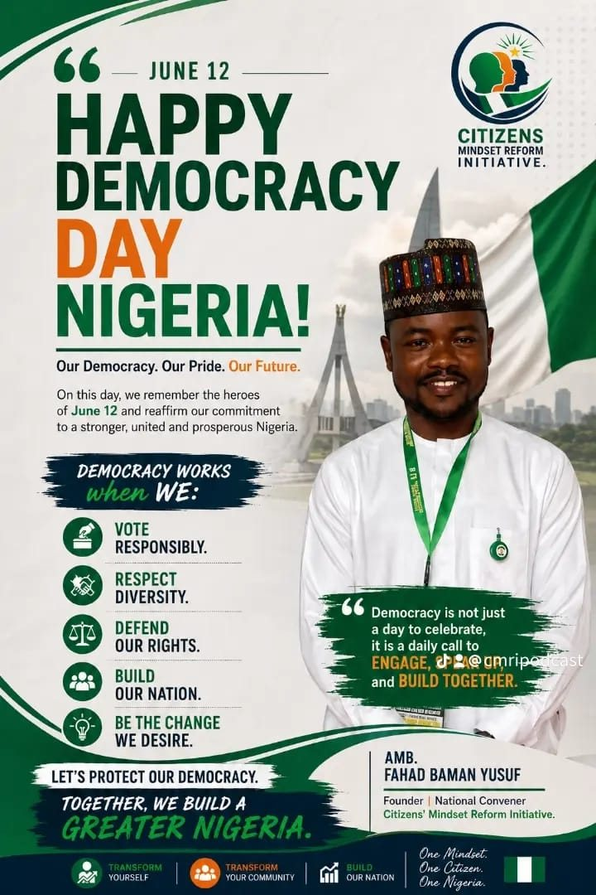
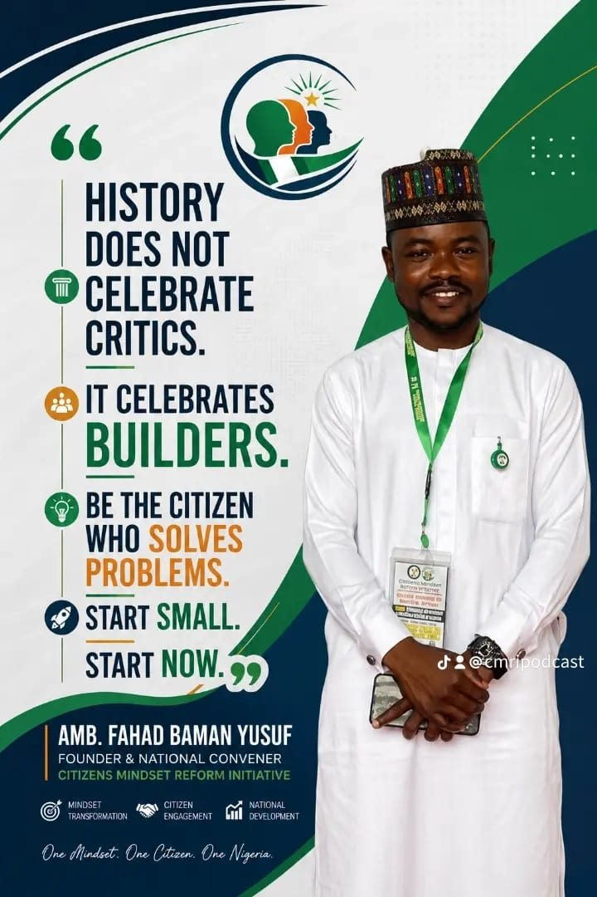
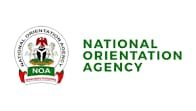
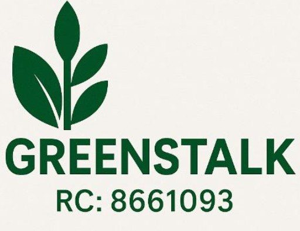

Citizens’ Mindset Reform Initiative (CMRI) is a non-profit rebuilding Nigeria’s moral, civic and ethical foundations, promoting responsible citizenship through programmes, dialogue and community action.

CMRI works to promote responsible citizenship, restore national values and inspire behavioural change through strategic programmes, advocacy and community engagement.


Five programmes that turn values into everyday behaviour: in our streets, in our states and in our conversations.
01A youth-led programme that turns citizens into guardians of streetlights, roads, schools, health centres and water points.
View programme
02A civic platform where citizens and stakeholders discuss the Kaduna we live in today and the Kaduna we want to build.
View programme
03A high-impact platform bringing Nasarawa citizens, businesses and institutions together to shape the state’s future.
View programme
04Street interviews and one-on-one conversations on citizenship, leadership and nation building.
View programme
05A national conversation that makes responsibility a daily habit in homes, schools, communities and workplaces.
View programmeA participatory, evidence-based approach combining education, engagement and advocacy to drive lasting mindset and behavioural change.

Nigerian transformation begins with personal transformation. Transform yourself. Transform your community. Transform your nation.Amb. Fahad Baman Yusuf
We collaborate with stakeholders across sectors to deliver impactful and scalable interventions.


We welcome funding, implementation, technical, CSR and media partnerships with foundations, corporates, government institutions, NGOs and impact-focused organisations.